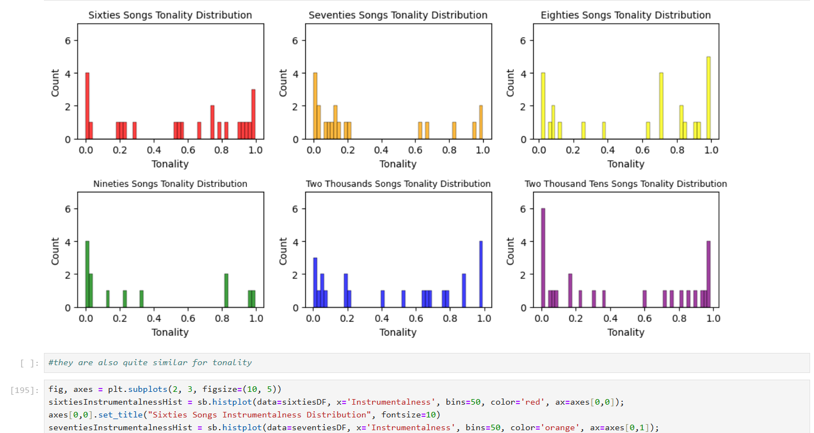
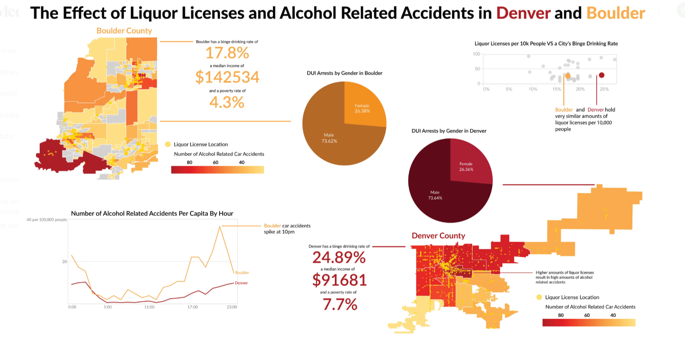
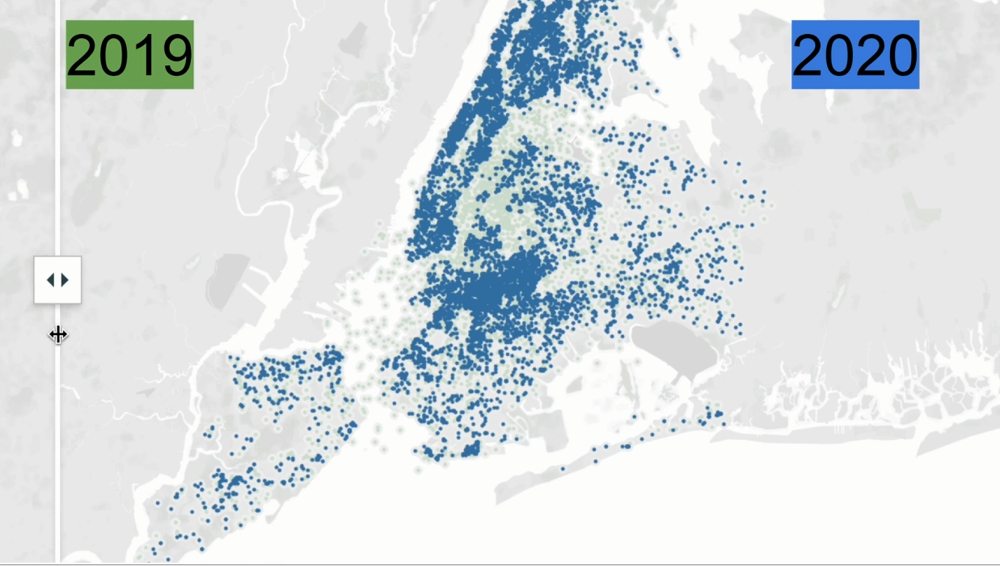
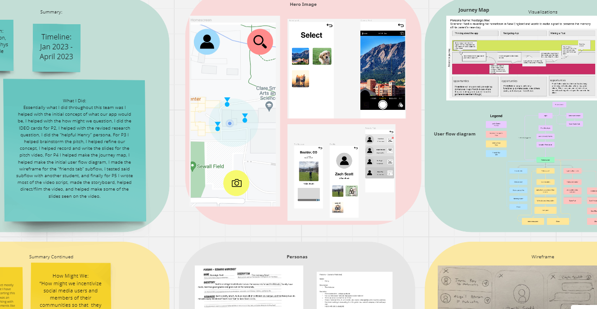
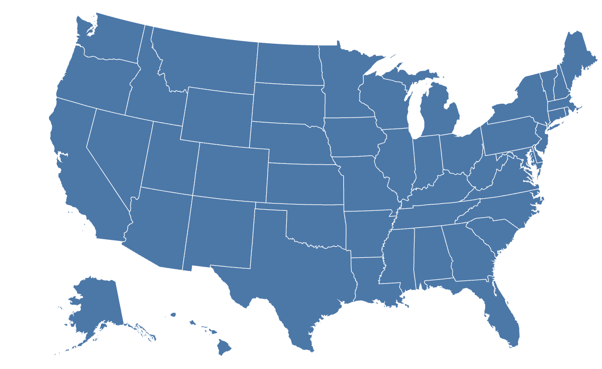

Move It: Visualizing Danceability of Spotify Songs

Using the Spotify API, I used Python libraries such and Pandas and BeautifulSoup to analyze the attributes
of over 600 songs to determine how Spotify quantifies the danceability of their music, and then visualized the
differences by decade to determine which attributes appear over time and how they affect those scores.
Visualizing the Correlation Between Alcohol Vendors and Drunk Driving Incidents in Colorado

By using Altair visualizations of map data and charts of incident rates, I, along with a team, created a
dashboard and report of how the amount of businesses with alcohol licenses correlated to the incidences of
drunk driving accidents in the cities of Boulder and Denver over time. By gathering the data and cleaning it
to be presented, we found that the actual vendors themselves were less responsible for incidents as opposed to
other factors such as time of day, holidays, speed of the road, and traffic rates.
Empire State of Rats: Visualizing Rat Populations Across NYC Over Time

By utilizing data visualization and reporting to tell the story of rodents across the city of
NYC over time, we as a group used interactive chart and map visualizations to show how the rat
population of the city was affected by events such as covid, and how the population of rodents
in the city varies by neighborhood. By gathering and cleaning mass datasets of pest sightings and
reporting, we told a compelling story of surprising events such as mass population loss during
Covid and how weather affects the city's relationship with rodents.
Photonote

As part of a team, we were tasked to brainstorm, ideate, sketch, and prototype the concept
for a new social media app. Through ideation and user testing, we settled on the concept of
Photonote, a gps data fed AR app that allowed users to interact with photos placed down by people
where they were taken in person. Because of this, the user would then feel more connected to
other users on the site, as by viewing photos in the place they were taken, they could more
easily empathize and imagine themselves in that scenario as they are by the same surroundings.
Below is thus the final portfolio of iteration, design, and sketching of the prototype.
Migration Across the US: Visualizing Modern Immigration in the United States

With a team, we are currently working to create a dashboard of the United States to help
visualize the current state of human migration and the story of those who come to the US.
By focusing on who arrives, why they arrive, what they do when they get here, and the methods
of how they arrive, we are working to create a humane yet accurate view of the current state of
nation as built by those who flee their home countries to inhabit it.